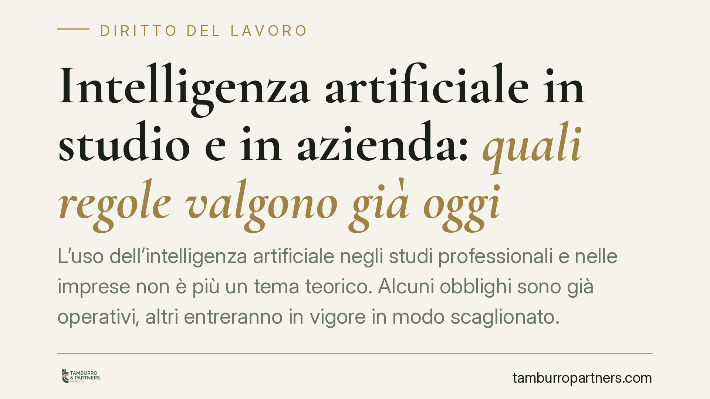

Intelligenza artificiale in studio e in azienda: quali regole valgono già oggi
L'uso dell'intelligenza artificiale negli studi professionali e nelle imprese non è più un tema teorico. Alcuni obblighi sono già operativi, altri entreranno in vigore in modo scaglionato. Fare chiarezza su ciò che vale oggi è indispensabile per evitare responsabilità deontologiche, sanzioni e trattamenti illeciti di dati personali.

Il contesto
L'adozione di strumenti di intelligenza artificiale — dai modelli generativi agli applicativi di analisi documentale — è ormai diffusa negli studi legali e contabili e nelle PMI. Il quadro normativo non è però omogeneo: convivono regole europee, disposizioni nazionali e principi deontologici. Alcuni vincoli sono già pienamente applicabili, altri seguono un calendario di entrata in vigore progressivo. Distinguere i due piani è il primo passo per non assumere comportamenti a rischio.
Inquadramento normativo
Il riferimento principale è il Regolamento (UE) 2024/1689 (c.d. AI Act), in vigore dal 1° agosto 2024 ma con applicazione scaglionata. I divieti relativi alle pratiche di IA inaccettabili (ad esempio il social scoring o alcune forme di riconoscimento emotivo sul luogo di lavoro) si applicano dal 2 febbraio 2025. Gli obblighi sui sistemi ad alto rischio diventano operativi più tardi, tra agosto 2026 e agosto 2027. Non tutti gli adempimenti, quindi, sono già esigibili: affermare il contrario sarebbe impreciso.
Sul versante nazionale, la Legge 132/2025 ha introdotto una disciplina in materia di intelligenza artificiale, prevedendo anche un obbligo di trasparenza verso il cliente nell'ambito delle professioni intellettuali quando l'IA incide sulla prestazione. Il dettaglio attuativo di alcune previsioni è demandato a interventi successivi: è prudente richiamare l'obbligo "ai sensi della L. 132/2025" e verificare il testo vigente prima di applicarlo caso per caso.
Per l'uso aziendale dell'IA nella gestione del personale valgono norme già consolidate. Le decisioni interamente automatizzate che producono effetti giuridici o significativi sulla persona sono regolate dall'art. 22 del Regolamento (UE) 2016/679 (GDPR), che ne limita l'ammissibilità e impone garanzie. A ciò si aggiunge l'obbligo informativo introdotto nel D.lgs. 152/1997, come modificato dal D.lgs. 104/2022 (c.d. Decreto Trasparenza): il datore che impieghi sistemi decisionali o di monitoraggio automatizzati deve informare preventivamente lavoratori e rappresentanze sindacali sul funzionamento di tali sistemi.
Implicazioni pratiche
Per il professionista, il nodo è duplice. Da un lato, la responsabilità della prestazione resta integralmente in capo al professionista: l'IA è uno strumento, non un sostituto del giudizio tecnico. Dall'altro, l'uso di applicativi va reso trasparente al cliente nei termini previsti dalla normativa. Resta inoltre fermo il dovere di riservatezza.
Un punto critico riguarda l'immissione di dati riservati in strumenti generativi che operano su server esterni, spesso extra-UE. Caricare atti, documenti o dati personali di clienti in piattaforme pubbliche può configurare una violazione del segreto professionale e del GDPR, oltre che un trasferimento di dati non controllato.
Per l'azienda, l'attenzione si sposta sulla gestione del personale. Selezione, valutazione, assegnazione di turni o controllo della produttività tramite algoritmi ricadono spesso nell'area dei trattamenti automatizzati e, in prospettiva, dei sistemi ad alto rischio dell'AI Act. Qui scattano obblighi di informazione, valutazione d'impatto e intervento umano significativo.
Cosa fare in concreto
- Mappare gli strumenti di IA già in uso, distinguendo tra impieghi interni di supporto e sistemi che incidono su clienti o lavoratori.
- Non inserire dati riservati o personali in piattaforme generative pubbliche: privilegiare soluzioni con garanzie contrattuali sul trattamento e sulla localizzazione dei dati.
- Predisporre o aggiornare l'informativa verso il cliente e, in azienda, verso i lavoratori e le rappresentanze sindacali, in coerenza con il D.lgs. 152/1997 come modificato dal D.lgs. 104/2022.
- Verificare la base giuridica di ogni decisione automatizzata che incida sulle persone, assicurando l'intervento umano richiesto dall'art. 22 GDPR.
- Monitorare il calendario dell'AI Act, con particolare attenzione agli obblighi sui sistemi ad alto rischio in vigore dal 2026-2027.
È opportuno affrontare il tema in modo strutturato, documentando le scelte adottate: la tracciabilità delle decisioni organizzative è, oggi, uno dei presidi più efficaci in caso di contestazione.
---
Contributo informativo a cura di Tamburro & Partners - Avv. Giuseppe Tamburro. Non costituisce parere legale.
Ogni storia di lavoro ha i suoi tempi.
Se gestisci HR e vuoi un confronto su contenzioso, ispezioni o licenziamenti, scrivi allo studio. Ti rispondiamo entro un giorno lavorativo.